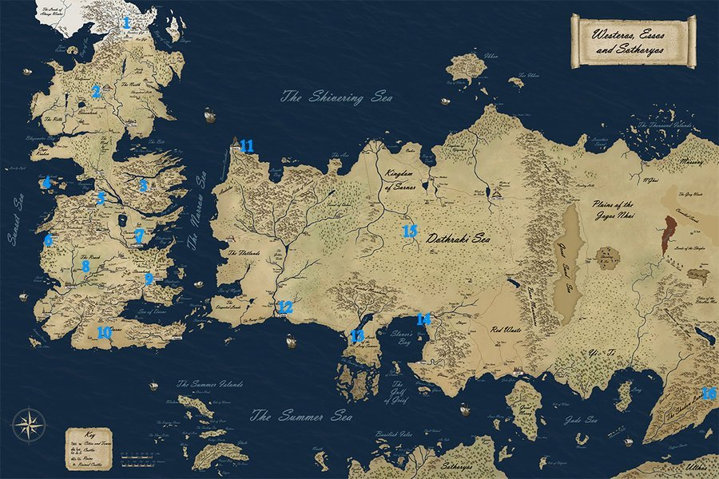

WORLD
On this page you can learn more about the world where the story of 'A Game of Thrones' takes place. The world is divided into three large continents: Westeros, Essos and Sothoryos. Each of these continents is further divided into regions. To learn more about a specific region, scroll down or click on the numbers in the list below to be taken to the information.
- The Wall
- The North
- The Vale of Arryn
- The Iron Islands
- Riverlands
- Westerlands
- Crownlands
- The Reach
- Stormlands
- Dorne
- City of Braavos
- City of Volantis
- Valyria
- Slaver's Bay
- The Dothraki Sea
- City of Qarth
The North is one of the constituent regions of the Seven Kingdoms located on the continent Westeros.The North is ruled from the castle of Winterfell by House Stark. It is the largest of the nine major regions of the continent, almost equal in size to the other eight combined. Its total population is under one million. The borders of the North are held to be the Sunset Sea to the west and the Shivering Sea to the east, the Wall to the north and the hills and bogs of the Neck to the south. Greywater Watch and its ruling house, House Reed, are the southernmost noble family owing fealty to Winterfell. Likewise, Last Hearth and its ruling house, House Umber, are the northernmost noble family sworn to Winterfell. Beyond Last Hearth comes the lands of the Gift under the control of the politically neutral Night's Watch and eventually the Wall itself. Bastards born in the North are given the surname Snow. People of the North are known as Northmen (or Northerners), and, derogatorily as wolves, in reference to the sigil of House Stark.
The Westerlands is one of the constituent regions of the Seven Kingdoms. The Westerlands are ruled from the castle of Casterly Rock by House Lannister. It is one of the smaller regions of the Seven Kingdoms geographically but has one of the larger populations. It is also immensely rich in natural resources, particularly metals. Predominantly mountainous, the hills of the Westerlands are riddled with veins of gold and silver, the mining of which has made the Lannisters and their bannermen immensely rich; the abundance of iron also allows them to easily forge weapons and military equipment. While the Lannister armies are not as huge as those of the Reach, they are the best-equipped in the realm with heavily-armored soldiers and cavalry. Bastards born in the Westerlands are given the surname Hill. People of the Westerlands are collectively known as Westermen and are referred to, colloquially, as "lions" in reference to the sigil of House Lannister. Colloquially, Westermen are also referred to as Lannisters.
The Reach is one of the administrative regions of the Seven Kingdoms. Geographically, it is one of the larger regions of the Seven Kingdoms, ranking as the second largest in area, behind only the vastness of the North. It is the most fertile part of Westeros, blessed with vast, blooming fields of crops and flowers, and numerous and well-populated villages and towns; it traditionally helps supply other less fertile parts of the Seven Kingdoms (most notably King's Landing) with grain, fruit, wine and livestock. The Reach is also the most heavily-populated part of Westeros and is one of the richest, second only to the Westerlands, ruled by House Lannister. Bastards born in the Reach are given the surname Flowers. People of the Reach are collectively known as Reachmen.
The Stormlands is one of the nine constituent regions of the Seven Kingdoms. They are so-named for the savage and frequent storms from the Narrow Sea that batter the coast. The Stormlands are one of the most heavily forested regions of the Seven Kingdoms. Two of the three large forests of the realm are located there, the Kingswood in the north (straddling the border with the Crownlands), and the Rainwood in the southern half of the Stormlands. The third large forest, the Wolfswood, is located in the North, but due to the large size of the North it does not dominate the entire region. In contrast, due to its moderate size, the Kingswood and Rainwood combined cover most of the Stormlands. Combined with the wet weather coming from the Narrow Sea, the climate of the Stormlands is predominantly temperate rainforest. Bastards born in the Stormlands are given the surname Storm.
The Riverlands is one of the constituent regions of the Seven Kingdoms. They have been a frequent battleground in the civil wars that have afflicted the Seven Kingdoms. On the whole, the Riverlands possess few natural defenses or borders. They are bordered to the west and the east by mountains, but these are possessed by the Westerlands and the Vale of Arryn respectively. Rather, these are natural defenses that the Westerlands and Vale possess against the Riverlands. The extensive swamps and narrow isthmus of The Neck also form an effective natural barrier, but these are part of the North under the Starks, again more of a defense against invasion from the Riverlands than the other way around. The Riverlands are dominated by the watershed of the Trident River, so-called because of its three major tributaries - the Green Fork, the Blue Fork, and the Red Fork - which converge at Ruby Ford in the east. Bastards born in the Riverlands are given the surname Rivers.
The Vale of Arryn , often referred to simply as the Vale, is one of the constituent regions of the Seven Kingdoms. It is ruled by House Arryn, from the Eyrie. Protected and surrounded by the Mountains of the Moon, the Vale is isolated from the rest of Westeros and is accessible only during warmer seasons. Unlike the Westerlands, which have gently rolling mountains, the mountains of the Vale are much less hospitable and more difficult to traverse. Further, while the mountains of the Westerlands are filled with precious metals such as gold, the mountains of the Vale are not particularly rich in resources. The valleys scattered between the harsh mountains, however, are as fertile as any in the Riverlands. The main advantage of the Vale's mountains is easy defense. Bastards born in the Vale are given the surname Stone. Bastards born in the Vale are given the surname Stone.
The Crownlands is one of the nine constituent regions of the Seven Kingdoms. Instead of being ruled by a Lord Paramount, the Crownlands are ruled directly by the monarch on the Iron Throne from the city of King's Landing, the largest city in Westeros and the capital of the Seven Kingdoms. The Crownlands is politically subdivided into two areas: the mainland part administered directly by the King on the Iron Throne and his Small Council from the city of King's Landing, and the offshore islands under the authority of the Prince of Dragonstone, traditionally the heir to the throne. Bastards born in the Crownlands are given the surname Waters.
The Iron Islands form part of the Kingdom of the Iron Islands. It had previously formed one of the nine constituent regions of Westeros. They are a group of seven small rocky islands clustered far off the western coast of the mainland of the continent, in Ironman's Bay. The Iron Islands are ruled from Pyke by House Greyjoy. hey are the smallest and among the least-populous of the regions of Westeros, but the naval skills of their population are unmatched and they enjoy great mobility due to their ships. The people of the Iron Islands, the ironborn, have a unique culture centered on maritime raiding and pillaging other peoples. Bastards born in the Iron Islands are given the surname Pyke.
Dorne is one of the nine constituent regions of the Seven Kingdoms. It is the southernmost part of the continent of Westeros, located thousands of miles from Winterfell and the North, and has a harsh desert climate. It is ruled from the castle of Sunspear by House Martell. The Dornishmen are ethnically distinct from the rest of the Seven Kingdoms and as a result, they have very different customs and traditions compared to the other regions of Westeros. Dorne contains the only desert on the entire continent of Westeros, and due to its arid climate it has one of the smallest overall populations. It is the only part of Westeros where citrus fruits and spices grow. Dornish wine is also highly prized throughout all of Westeros, and considered to be among the best imports available. Bastards born in Dorne are given the surname Sand.
The Wall is a colossal fortification which stretches for 100 leagues (300 miles) along the northern border of the Seven Kingdoms, separating the realm from the domain of the wildlings who live beyond. The Wall is reported to be over 700 feet tall and is made of solid ice. It was supposedly constructed using both magic and mundane means some eight millennia ago, in the aftermath of the Long Night to defend the realm against the White Walkers who dwell in the far north, though they are now considered myths by most. The Wall has grown considerably since it was first constructed, as the Watch has spent the years augmenting it with ice blocks and upgraded defenses.
Braavos is one of the Free Cities located to the east of Westeros. It is the northern-most, the richest, and arguably the most powerful of the Free Cities. Described as a city of seafarers and master swordsmen, Braavos consists of hundreds of tiny islands connected by stone bridges. Its main landmarks include the Titan of Braavos, the House of Black and White and the city's famed Iron Bank. Of the nine Free Cities in western Essos, Braavos is unique in that it was not founded as a colony. The city was established by a large group of slaves, who overpowered their Valyrian captors and took control of the ships that were transporting them. Knowing they would be severely punished for such an act of rebellion, the slaves sought a refuge as far away from the Freehold as possible. The people of Braavos are known as Braavosi.
Volantis is one of the Free Cities located to the east of Westeros. The southern-most and oldest of the Free Cities, it lies on the southern coast of Essos, where the mighty Rhoyne River meets the Summer Sea. It was founded as a colony of Valyria many centuries ago and is a great port. As the southeastern-most of the Free Cities, Volantis is the closest of them to Slaver's Bay, which is on the other side of the Valyrian Peninsula, and the city is a gateway for travelers between the two regions. Volantis is one of the more powerful of the Free Cities, and has the largest population of any of them, although more than 80% of that population are slaves. People from Volantis are known as Volantene.
The Dothraki Sea or Great Grass Sea is a region on the continent of Essos, thousands of miles to the east of Westeros. It is located in the continental interior, east of the Free Cities, and is a vast landscape of steppes and plains covered in low green grass which makes it look like a sea from afar. It is named for the Dothraki people who inhabit it, horse-mounted warriors who migrate across the plains in large hordes called khalasars (each of which may contain thousands of riders) to plunder neighboring lands. Vaes Dothrak, the only city of the Dothraki and central hub of their society, lies on the northeastern edge of the Dothraki Sea.
Qarth is a great trading city located on the southern coast of Essos, on the straits linking the Summer Sea to the Jade Sea. Ships from Westeros, the Free Cities, the Summer Islands, and Slaver's Bay all pass through the Straits of Qarth on their way to the great nations and trading centers of the Further East, such as Yi Ti and Asshai. Qarth is defended by immense stone walls and strong gates, and the Qartheen have been known to bar entry to the city to those who do not meet their approval.Status is quite important among the Qartheen, and they tend to be very concerned about appearances; the men wear vests which are covered in extravagant gold tracing and jewelry on the front, and women sometimes dye their hair to appear more exotic. Both men and women decorate their clothing with gold pieces shaped like insects and encrusted with jewels.
The Bay of Dragons, formerly known as Slaver's Bay, is the area on the southern coast of Essos, located to the southeast of Westeros and the Free Cities and to the west of Qarth. The name can refer to the bay itself or the entire region. As the name implies, the cities of the Slaver's Bay were the hub of the international slave trade for millennia. Slaver's Bay is dominated by three large independent city-states, all located on the eastern side of the bay: from south to north they are Astapor, Yunkai, and Meereen - of which Meereen is by far the largest. These three former slaver-cities were famous as the heart of the slave trade in Essos, selling slaves to the Free Cities, Dothraki, and Qarth, before Daenerys Targaryen liberated the region and ended the slave trade.
Valyria was the capital city of the once-great civilization known as the Valyrian Freehold. The city of Valyria is located on the eastern continent of Essos, southeast of the Free Cities, on the Valyrian Peninsula, a large peninsula extending southwards into the Summer Sea. For over 5,000 years, Valyria was the capital of the greatest civilization mankind had ever seen, the heart of an empire that ruled half the known world. Their power was based on the taming and use of dragons in warfare. Eventually it was destroyed in a catastrophic volcanic event known as the Doom of Valyria, which shattered the Valyrian Peninsula, wiped out almost all the dragons in the world and created the much-feared Smoking Sea. After its fall, the city is commonly referred to as "Old Valyria".
DISCLAIMER: All information found on this page was taken from the game of thrones fandom wiki. To learn more about each region and more you can go there.